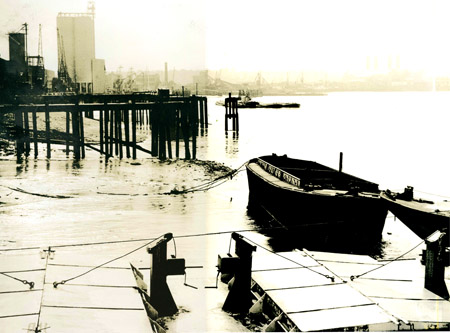
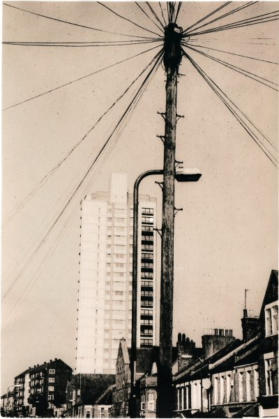

Photography

Above: Sugar refinery at Greenwich 1975 from Kodak film and Lith printed.
I’ve always been fascinated by the ability of photography to reveal truths and capture the moment. Photography is a one-way time machine: we can go back.
Before the arrival of digital photography, developing films and printing on photographic paper was either a smelly, and time-consuming craft done by hand, or an industrial process machine mostly automated. Doing your own processing had a certain ‘expectation moment’ when you removed films from the spirals they are held in for development, after fixing and washing, when you first see your work, good or bad. Quite different to digital, where the result is instantly available, and you are able learn much more quickly.
The other big difference between the old technology and digital, was that the end point was nearly always a physical sheet of photographic paper, and digital is always viewed first on an electronic screen, and many images never reach the paper print stage.
Above, refinery at Greenwich 2020. Smartphone camera
Prints on photographic paper have a quality that sets them apart from inkjet’s pigments and inks. Photographic paper is a surface with metal grains which a developer solution can turn black - in a darkroom. And then prints can be ‘toned’, a process where additional chemicals, either dyes or metal salts, are used to enhance or reveal new insights.
And then there is Lith printing which uses a different development chemical, intended for lithographic film, rather than standard photographic paper developer. The process can be frustrating unpredictable, but also rewarding by generating grainy, often high-contrast tones of varying subtle colours.
Time-wise, cost-wise, digital cannot be beaten though. And the quality of digital printing is extremely high, and has its own merits, equal at least, to chemistry.

Above: 1970s High Rise emerging from Victorian Terraces. South London, 2000, Lith print.
(photos.md)
Single template